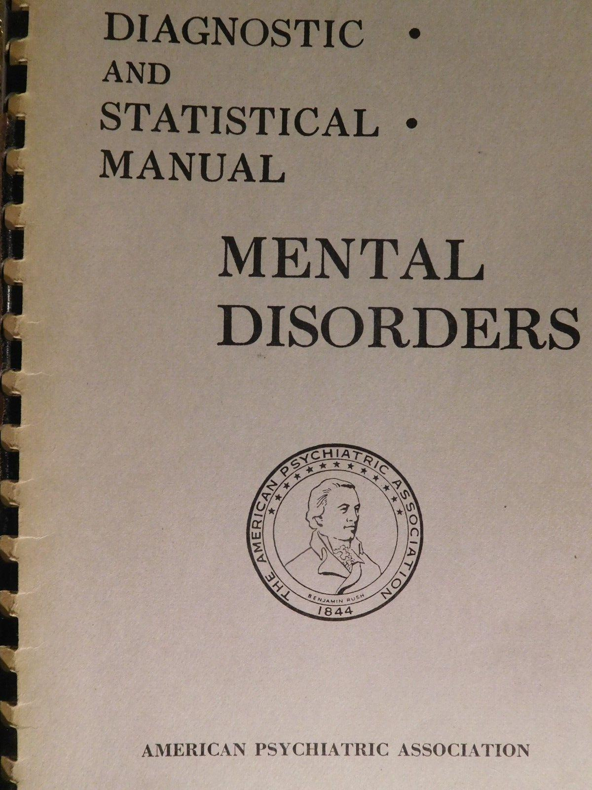
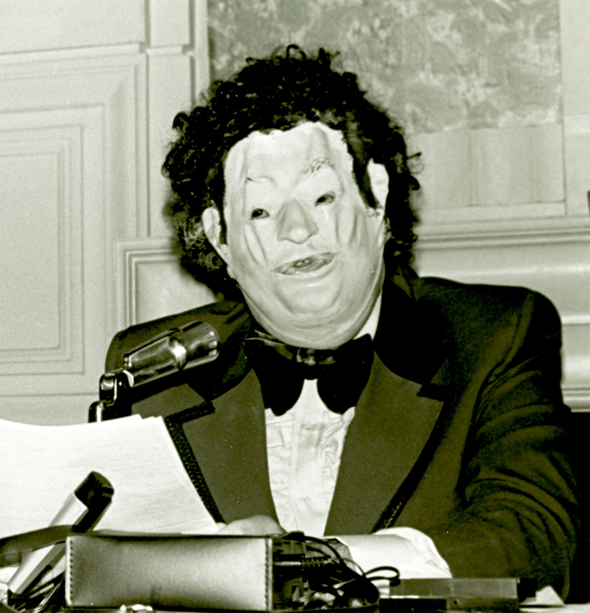
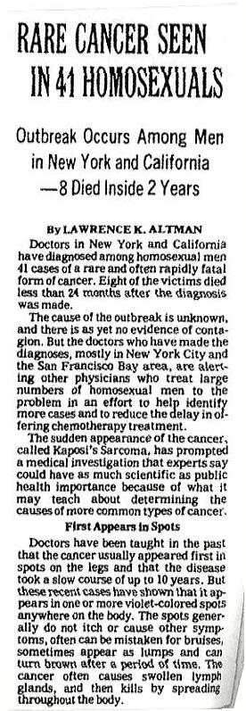

The medical classification of homosexuality and gender identity was the most powerful
tool used to justify the persecution of the LGBTQ+ community during the 20th century.

In 1918, an American manual called the “Statistical Manual for the Use of Institutions of
the Insane” was first published. The book was ambiguous about homosexuality and classified
it under “A large group of pathological personalities”. But in 1952, the American Psychiatric
Association published the first edition of “Diagnostic and Statistical Manual” (DSM-1), a
manual that classifies psychotic diseases in the United States. Both homosexuality and transvestism
were put under the 000-x60 “Sociopathic Personality Disturbance” category.
This classification was not based on clear scientific evidence but was influenced
social norms at the time. During the mid-20th century, some researchers began to conduct some
studies on the difference between people identifying as heterosexual and homosexual. Scientist such
as Alfred Kinsey and Evelyn Hookers identified that these two individuals did not have a differnece in terms
of mental health or psychological functioning. During that time, the term “gay” first made its
appearance. Men preferred this term as it connected more to the identity rather than just “homosexual”
who was just a medical judgment.
The term transgender was not yet used by society, as transgenders were often misunderstood and were
thought to be cross-dressing. But it was still classified as a mental illness and a "gender
identity disorder”. With this, trans people were often denied medical care and had to undergo hormonal change.
Bisexuality was too, not recognised. Society viewed them as either heterosexual or homosexual,
without in-between. A study showed that bisexuals were more likely to face depression as discrimination
was coming from both sides of society.
In 1968, the second edition of the book was published under the title DSM-2. In this manual, any
ambiguity about gender identity and sexual orientation was cast aside to explicitly categorise it
as “sexual deviation” (sexual behaviours or interests that differs from the norm). This change
further showed that it was abnormal and required treatment or correction. This categorisation had
big consequences, as the DSM was widely used not only by psychiatrists but also the government to
define it as a mental illness and justify all the legal repressions.

However, it all changed in 1973 when the APA (American Psychiatric Association) voted to declassify
homosexuality in the DSM as a mental disorder with 5854 for and 3810 against. While it was not
completely removed, the name of the classification changed to just “people in conflict with”.
This was successful because of the push of activists who fought to discuss it with the organisation's
members. In 1972, Dr. Fryer, a gay psychiatrist under the false name of “Dr. Anonymous” delivered a
speech dressed in a mask and using a distorted microphone. In it, he discussed how damaging
discrimination was and that it needed to be removed from the DSM.
Furthermore, in the third edition of DSM published in 1980, DSM-3 changed the category from sexual
orientation disorder to ego-dystonic homosexuality (thoughts or behaviours that conflicted with
someone's self-image, causing anxiety and discomfort for that person). In this manual, the
classification was stricter. For the individual to be classified like this, they needed to have a
strong desire to change orientation. While this still was not a full removal, the gay movement
kept acting.

During the AIDS crisis in 1981, “The New York Times” published a report that a “Rare cancer seen
in 41 homosexuals” was the cause of the epidemy. Those reports claimed that the disease affected
only gay men, giving birth to the term GRID (Gay-Related Immune Deficiency), leading to society
believing male homosexuality was the cause of the disease and leaving them without proper care.
Women, on the other hand were believed to not be able to get the disease. Due to this mishap,
over 65% of women who died by the virus were never diagnosed with AIDS.
The World Health Organisation (WHO) also has a proper version of the DSM, called “International
Classification of Diseases” (ICD), used more internationally as a reference. In earlier
versions from ICD-6 (approved in 1948) until ICD-9 (1975), homosexuality, transvestism and lesbianism
were listed under “sexual deviations”, which differed from DSM, who did not explicitly include
lesbianism in their code. Moreover, growing scientific research and activism led to major shift in
1990, when it was removed in the ICD-10. Despite this, some categories such as “ego-dystonic sexual
orientation” remained for some time until its full removal.
Finally, with the publication of the DSM-3-R in 1987, the term homosexuality was entirely removed
from the ego-dystonic section which marked a turning point for the LGBTQ+ community.
In conclusion, the medical and scientific treatment of homosexuality in the 20th century shows how
authority was used to legitimise discrimination. Through classifications
like DSM and ICD, it was shown as a mental disorder that needed to be cured. Although important
changes occurred near the end of the 20th century, they were progressive and not immediate.